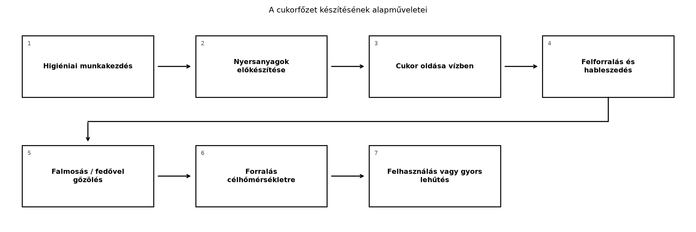
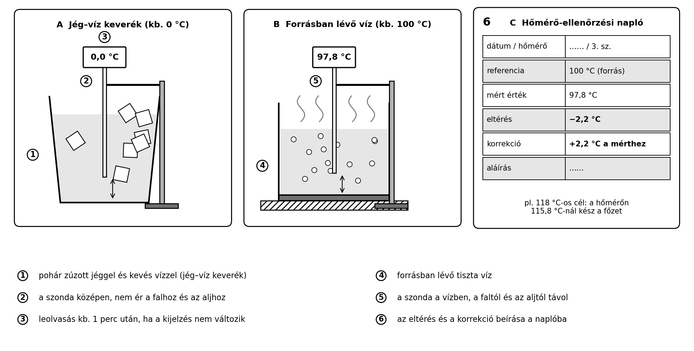

Amikor a cukrászműhelyben fondánbevonathoz készítesz cukorfőzetet, az a legbosszantóbb, ha a főzet hűlés közben szemcsés lesz. A vendég nem szereti a ropogós kristályokat a sima fondánréteg alatt. Ugyanaz a cukor lehet fényes, sima fondán, ha a főzés során nem adunk neki okot a kristályosodásra.
Képzelj el egy rozsdamentes üstöt: az alján cukor és víz oldódik, a tetején hőmérő, melletted vizes ecset, mellette kimért glükózszirup. A főzet eleinte zavaros, majd forrás közben kitisztul; a falon cukorkristályok tapadnak, amelyeket ecsettel mosol le. Ha most kevernél, a kristályok belesodródnának a főzetbe, és a hűléskor megindulna a nem kívánt kristályosodás.
Definíció. A cukorfőzet olyan vizes cukoroldat, amelyet ellenőrzött forralással a kívánt szárazanyag-tartalomra és hőmérsékletre töményítünk, és amelyben a szacharóz a felhasználás pillanatáig oldott, nem kristályos állapotban marad. A hőmérséklet az oldat forráspontját mutatja, amely a koncentráció növekedésével emelkedik.
Definíció. A kristályosodás az a folyamat, amelyben az oldott szacharózmolekulák rendezett rácsszerkezetbe, kristályokba kapcsolódnak. A cukorfőzés célja a túltelített oldat stabil állapotban tartása, tehát a nem kívánt kristályképződés megelőzése.
Definíció. Az invertcukor glükóz és fruktóz keveréke; a szacharóz savas hidrolízisével keletkezik. A glükózhoz hasonlóan megzavarja a nagy szacharózkristályok növekedését, ezért kristályosodásgátló.
A Brix-fok és a refraktométer fogalmát a Cukorszirupok sűrűsége: Baumé-fok, refraktometria és Brix alfejezet ismerteti. Itt elég annyit megjegyeznünk: a cukorfőzés során a forráspont és a szárazanyag-tartalom együtt nő, ezért a hőmérséklet a legfontosabb üzemi ellenőrző jel.
| Nyersanyag | Szerep a cukorfőzetben | Tipikus mennyiség (a cukor tömegére vetítve) | Megjegyzés |
|---|---|---|---|
| Kristálycukor | oldandó szacharóz; a főzet váza | 100% | tiszta, száraz, morzsálható |
| Víz | oldószer; a forralás során feleslege távozik | 30–50% | lehetőleg alacsony vízkeménység |
| Glükózszirup | kristályosodásgátló, viszkozitás, fényesség | 10–20% | tipikusan 70–80% szárazanyag-tartalom |
| Citromsav vagy borkősav | kis mennyiségű invertcukrot képez | 0,1–0,2% | vízben oldva adjuk a főzethez |
A glükózszirup kukoricakeményítő hidrolízisével előállított, glükózból, maltózból és dextrinekből álló sűrű szirup. A cukorfőzetben azért hasznos, mert a nagy szacharózkristályok növekedését meggátolja: a szacharózmolekulák közé ékelődve rontja a kristályrács kialakulásának rendezettségét. Emellett kissé fényesebbé, rugalmasabbá teszi a kész fondánt és a díszítőmasszákat.
A sav szerepe hasonló irányba mutat. A hő és a sav együttesen kis mennyiségű szacharózt glükózra és fruktózra bont, tehát invertcukrot hoz létre. Ez az invertcukor ugyancsak késlelteti a nem kívánt kristályosodást. Ugyanakkor a túl sok sav vagy a hosszú forralás túlzott invertálást okoz, ami a szirupot sötétebbé, tapadósabbá, ízében kissé kesernyéssé teheti. Ezért a savat pontosan mérjük, és csak az előírt ideig forraljuk a főzetet.
A tisztaság a cukorfőzés alapkövetelménye. A cukorban maradt morzsa, a por, a zsíros edényfal vagy a nem rozsdamentes eszköz mind kristálymagot, illetve szín- és ízhibát okozhat. A cukorfőzés aranyszabálya: minden, ami a főzetbe kerül, tiszta legyen.

A fenti folyamatábra a műveletek sorrendjét mutatja. A lépéseket most pontosan, a „miért”-ekkel együtt írjuk le.
Higiéniai munkakezdés. Tiszta munkaruha, hajháló, ékszer nélkül. Kézmosás, tiszta törlőkendő. Az üst, a hőmérő, az ecset és a habszedő legyen tiszta, zsírtalan és száraz. A cukorfőzetet nem szabad zsíros, mosószeres felülettel érintkeztetni, mert a zsír és a mosogatószer-maradék habzást, íz- és színhibát okoz, a rátapadt szennyeződés pedig kristálymagként hat.
Mérés. A cukrot, vizet, glükózszirupot és savat tömeg szerint mérjük. A darabos cukrot előbb oldjuk fel; a receptben megadott mennyiséget ne ömlesszük csak „szemre”.
A cukor oldása. A cukrot és a vizet az üstbe mérjük. Az oldási szakaszban, még hidegen vagy langyosan, szabad keverni, mert a kristályok még oldódnak. A felforralástól kezdve azonban már nem.
Glükózszirup és sav hozzáadása. A glükózszirupot a kimért cukorral együtt hagyjuk oldódni, vagy a langyos oldathoz adjuk. A savat kis vízben feloldva, a felforralás előtt keverjük hozzá. Ettől kezdve megindulhat egy enyhe invertálódás.
Felforralás. Közepes erősségű hőközlésen forraljuk fel. A túl erős láng helyi túlhevítést, esetleg karamellizálódást okozhat; a túl gyenge láng hosszú ideig tartó, felesleges invertálást eredményezhet.
Hableszedés. A forrás elején a felületi habot lyukacsos kanállal, habszedővel távolítsuk el. Ebben a habban a cukorban lévő szennyeződések, apró részecskék dúsulnak fel; ha a főzetben maradnának, később elszíneződést vagy kristályosodási gócokat okozhatnak.
Falmosás vizes ecsettel. Forrás közben az üst falára cukor fröccsen, és ott kristályok képződnek. Tiszta, tiszta vízbe mártott, kicsavart ecsettel óvatosan lemossuk az edény falát. A víz ne csöpögjön nagy mennyiségben a főzetbe, mert hígítaná azt. Ezt a műveletet szükség szerint megismételjük. A falmosás célja, hogy a falon lerakódott kristálymagok ne juthassanak vissza a főzetbe.
Fedő alatti gőzölés. Néhány percre fedőt teszünk az üstre, hogy a lecsapódó gőz lemossa a falat. Ez ugyanazt a célt szolgálja, mint a falmosás, de nagyobb felületen hat. Utána a fedőt levesszük, és a főzetet tovább forraljuk.
Forralás a célhőmérsékletre. A hőmérő érzékelője a főzet közepén, a forrásban lévő oldatban legyen, de ne érjen az edény falához. Forrástól kezdve tilos fémkanállal keverni, mert a kristálymagok belesodrása mellett a fröccsenés is forrázást okozhat. A hőfokot folyamatosan figyeljük.
Elzárás, felhasználás vagy hűtés. A célhőmérséklet elérésekor az üstöt levesszük a tűzről. A forró cukorfőzetet azonnal a recept szerint felhasználjuk (például fondánkészítéshez leöntjük, áztatósziruphoz hígítjuk), vagy fedett, tiszta edényben óvatosan hűtjük.
A tisztasági fogásokat (6., 7. és 9. lépés) az ábra mutatja: a hab leszedése habszedővel, a falon a folyadékszint fölött lerakódott kristályok lemosása vizes ecsettel, a hőmérő helyes állása, valamint a forrás utáni keverés tilalma.
A cukorfőzés sikerének kulcsa a pontos hőmérsékletmérés. A tiszta víz 100 °C-on forr, tengerszinti légnyomáson. Ahogy koncentrálódik a cukoroldat, úgy emelkedik a forráspont. A kívánt hőmérséklet tehát a főzet szárazanyag-tartalmának közvetett mérője.
A cukorhőmérőt mindig forrásban lévő tiszta vízben kalibráljuk. Ha a hőmérő például 97,8 °C-ot mutat a forrásban lévő vízben, akkor a mért értékhez 2,2 °C-ot kell adni. Azt is fontos tudni, hogy a légnyomás változása kissé módosíthatja a forráspontot; Magyarországon a gyakorlati kalibrálás így is 100 °C körüli.
A hőmérő érzékelője ne érjen az üst aljához vagy falához, mert akkor az edény hőmérsékletét méri, nem a főzetét. A bimetálos vagy digitális hőmérőt rendszeresen ellenőrizni kell, mert az ütés, a hirtelen hőváltozás és a gőz tönkreteheti a pontosságát. Az ellenőrzést az ábra mutatja: a fő kalibrálási pont a forrásban lévő tiszta víz; kiegészítő ellenőrzésként jég–víz keverékben a hőmérőnek kb. 0 °C-ot kell mutatnia. Az eltérést és a korrekciót a hőmérő-ellenőrzési naplóba írjuk.

A 118 °C körüli főzet gyakorlati szárazanyag-tartalma hozzávetőleg 88% (ellenőrizendő: üzemi receptúra, a glükózszirup aránya és a légnyomás). Ezt az értéket a Cukorfőzési fokok és kézi próbák alfejezetben fogjuk részletesen használni.
1. példa. Készítünk egy alapcukorfőzetet az alábbi feltöltéssel: 1 000 g kristálycukor, 150 g glükózszirup (szárazanyag-tartalma 80%), 400 g víz, és a savhoz 10 g vízben oldott 1,5 g citromsav. Mennyi a főzet szárazanyag-tartalma a feltöltés pillanatában?
A szárazanyag-tartalom:
A feltöltött oldat teljes tömege:
A kezdeti koncentráció:
A főzet kezdeti tömegszázaléka tehát kb. 71,8%. A forralás során a víz távozik, a szárazanyag tömege gyakorlatilag nem változik.
2. példa. Ha ugyanezt a főzetet 88%-os szárazanyag-tartalomig forraljuk, hány gramm vizet kell elforralni? (A 88%-os értéket tanulási példaként használjuk.)
A szárazanyag tömege: . A 88%-os oldat teljes tömege:
A feltöltéskor a víz tömege:
(A glükózszirup 20%-a víz, ezért g víz van benne.)
A 88%-os főzetben a víz tömege:
Az elforralandó víz:
Tehát hozzávetőleg 287 g vizet kell elforralnunk a 88%-os koncentráció eléréséhez. A gyakorlatban a hőmérsékletet figyeljük, mert a forráspont mutatja a koncentrációt.
3. példa. Hőmérő-kalibrálás. A hőmérő forrásban lévő tiszta vízben 97,5 °C-ot mutat. A cukorfőzet hőmérséklete a mérés szerint 116,5 °C. Mennyi a becsült valós hőmérséklet?
A korrekció:
A becsült valós hőmérséklet:
Ez már a fondán felső hőmérséklet-tartományába esik (ellenőrizendő: az aktuális receptúra). A nem kalibrált hőmérő tehát veszélyes hibákhoz vezethet.
Gyakorlati útmutató. Cél: 118 °C körüli, kristályosodásmentes alapcukorfőzet készítése otthoni gyakorláshoz vagy tanműhelyben.
Figyelem. A forró cukor súlyos égési sérülést okoz. Dolgozz hosszú ujjú, szoros kötényben, zárt cipőben; nyúlj hőálló kesztyűvel, fogd meg az üstöt edényfogóval. Gyermekek ne legyenek a közelben.
Biztonsági korlát. 100 °C feletti cukorfőzést tanuló csak oktatás után és felügyelet mellett végez; otthon kis adagban, gyerekektől távol gyakorolj; hideg vizes edény legyen kéznél az égés azonnali hűtésére.
Technológiai lap.
Termék neve: Alapcukorfőzet (szirup), 118 °C-ra, fondánalaphoz.
Anyaghányad (1 kg cukorra): | Nyersanyag | Mennyiség (g) | Megjegyzés | |—|—|—| | Kristálycukor | 1 000 | száraz, tiszta | | Víz | 400 | ivóvíz; a savoldathoz még 10 g | | Glükózszirup | 150 | 80% szárazanyag, beszállítói adatlap szerint | | Citromsav | 1,5 | 10 g vízben oldva | | Összesített feltöltött tömeg | 1 561,5 | tájékoztató | | Várható kész főzet | kb. 1 280 | 118 °C-on, tájékoztató |
Eszközök és gépek. Rozsdamentes üst vagy vastag aljú edény, digitális vagy bimetálos cukorhőmérő, vizes ecset, lyukacsos habszedő, mérleg, mérőedény, fedő.
Műveleti sorrend. A fenti 1–10. lépés szerint; a felforralás után keverni tilos; a célhőmérséklet 118 °C (tájékoztató érték).
Kritikus pontok. Élelmiszerbiztonsági szempontból a 100 °C feletti forralás biztosítja a főzet hőkezelését; a főzet visszahűtését és tárolását lefedve, tiszta környezetben kell végezni. Technológiai kulcspontok: a falmosás és a fedő alatti gőzölés, valamint a pontos hőmérséklet.
Allergének. A receptben a 14 jelölendő allergéncsoport egyike sem szerepel jellemzően. A glükózszirup beszállítói specifikációján ellenőrizni kell a gluténmentességet, ha búzaszirup is szóba kerül (ellenőrizendő: gyártói adatlap).
Minőségi jellemzők. Színe átlátszó, enyhén sárgás; szaga édes, karamellmentes; íze tiszta édes, savanykás mellékíz nélkül; állaga sűrű, szirupos, kristálymentes.
Tárolás, eltarthatóság. Fedett, tiszta edényben, hűvös helyen 1–2 napig (ellenőrizendő: üzemi gyakorlat). Hűtve kristályosodhat; felhasználás előtt óvatosan, keverés nélkül enyhén melegíthető.
A kész cukorfőzet minőségét érzékszervileg és műszeresen is ellenőrizzük. Szemrevételezéssel vizsgáljuk az átlátszóságot, a színt és az esetleges kristályszemcséket. A hőmérővel ellenőrzött forráspontot, szükség esetén refraktométerrel a szárazanyag-tartalmat vetjük össze. A főzet ne legyen karamellszagú, füstös vagy keserű. A tömegellenőrzésnél a mérlegelt kiindulási tömeget és a vízveszteséget hasonlítjuk össze.
| Hiba (tünet) | Ok | Megelőzés, javítás |
|---|---|---|
| A főzet hűlés közben szemcsés, kristályos lesz | Kristálymag került bele; keverés forrás után; nem volt falmosás; szennyezett edény | Falmosás, fedő alatti gőzölés, tiszta eszköz, forrás után ne keverjük; ha még nem karamellizálódott, kevés vízzel és savval visszaoldható, de fondánná már nem lesz tökéletes |
| Barnulás, égett szag | Túl magas hőmérséklet vagy túl hosszú forralás | Kalibrált hőmérő, közepes láng; célhőmérséklet után azonnal leállítani |
| Ragadós, híg marad | Nem érte el a megfelelő hőmérsékletet | Ellenőrizni a hőmérő kalibrálását; tovább forralni a megfelelő hőfokig |
| Kesernyés íz, sötét szín | Túl sok sav, túlzott invertálódás | Savat pontosan mérni; csak előírt ideig forralni |
| Fehéres hab a főzetben | Nem szedtük le a habot; szennyező fehérjék | Forrás elején habszedővel leszedni |
Egy tanuló péntek reggel fondánbevonathoz készített cukorfőzetet. A főzet forrása közben fémkanállal megkeverte, hogy ellenőrizze a sűrűségét. A falról apró kristályok estek a főzetbe. A hőfok szépen elérte a 118 °C-ot, de a hűlés során a főzet fokozatosan fehéredni kezdett, és szemcsés lett. Aznap a fondánt már nem lehetett használni, mert a bevonat érdes, ropogós lett volna. A hibát a műhely vezetője szerint a forrás utáni keverés okozta, ezért a tanulónak a következő adagot falmosással és fedő alatti gőzöléssel, keverés nélkül kellett elkészítenie. A második adag sima, fényes lett.
1. feladat (A). Határozd meg röviden: mi a cukorfőzet, és mi a különbség a kristályosodás és az invertálódás között?
2. feladat (A). Számítsd ki, hogy mekkora a kezdeti szárazanyag-tartalom, ha 800 g cukrot, 120 g glükózszirupot (75% szárazanyag), 300 g vizet és 1 g citromsavat használunk.
3. feladat (B). A hőmérő forrásban lévő tiszta vízben 98,2 °C-ot mutat. A főzet mért hőmérséklete 115,6 °C. Mennyi a becsült valós hőmérséklet, és milyen hibát okozhat, ha nem számolunk a korrekcióval?
4. feladat (B). Az 1. feladat receptjéből indulva: ha a cél szárazanyag-tartalom 86%, hány gramm vizet kell elforralni?
5. feladat (C). A kész fondán szemcsés, érdes, nem sima. Írd le, milyen okokra gyanakszol, és milyen ellenőrzéseket végeznél a műhelyben, hogy az okot megtaláld.
6. feladat (D). Készítsd el a fenti gyakorlati útmutató szerint a 118 °C-os alapcukorfőzetet, töltsd ki a technológiai lapot, és értékeld a kész főzetet a minőségi jellemzők szerint.
Önellenőrzés – válaszok
1. feladat megoldása (A). A cukorfőzet olyan vizes cukoroldat, amelyet forralással töményítünk, és amelyben a cukor oldott állapotban marad. A kristályosodás a szacharózmolekulák rendezett szilárd rácsszerkezetbe kapcsolódása, amit el szeretnénk kerülni. Az invertálódás a szacharóz savas hidrolízise, amely glükózt és fruktózt hoz létre, és éppen a kristályosodást lassítja.
2. feladat megoldása (A). A szárazanyag:
Az oldat feltöltött tömege:
A kezdeti koncentráció:
3. feladat megoldása (B). A korrekció: . A becsült valós hőmérséklet: . Ha nem korrigálunk, a főzetet tovább forraljuk, mint kellene, így túl tömény, esetleg karamellizálódott lesz.
4. feladat megoldása (B). A szárazanyag tömege: . A 86%-os oldat teljes tömege:
A kezdeti víz tömege: . A végső víztömeg: . Elforralandó víz: .
5. feladat megoldása (C). A szemcsés, érdes fondán esetén a következő okokra gyanakszunk: kristálymag került a főzetbe (forrás után keverték, nem volt falmosás), szennyezett, zsíros vagy nedves eszköz, túl hosszú tárolás, utólagos keverés, rossz hőmérséklet vagy rossz glükóz/sav arány. Az ellenőrzést a műveleti naplóval, a hőmérő kalibrálásával, a felhasznált eszközök tisztaságának vizsgálatával és az alapanyag beszállítói adatlapjának ellenőrzésével végezzük.
6. feladat megoldása (D). A gyakorlati feladat értékelési szempontjai: a munkakezdés higiéniája, a pontos mérés, a falmosás és fedő alatti gőzölés elvégzése, a hőfok pontos elérése, a kész főzet kristálymentessége, színe és íze, valamint a technológiai lap hiánytalan kitöltése. A várt eredmény: átlátszó, enyhén sárga, sűrű, kristálymentes szirup.
A cukorfőzet olyan vizes cukoroldat, amelyet forralással töményítünk a kívánt hőmérsékletre. A nem kívánt kristályosodást tisztasággal, glükózsziruppal és kis mennyiségű savval, valamint a forrás utáni keverés tilalmával előzzük meg. A műveleti sorrend: oldás, felforralás, hableszedés, falmosás vizes ecsettel, fedő alatti gőzölés, forralás a célhőmérsékletre. A hőmérőt forrásban lévő vízben kalibráljuk, és az érzékelőt a főzet közepén tartjuk. A 118 °C körüli főzet szárazanyag-tartalma hozzávetőleg 88% (ellenőrizendő). A továbbvitt eredmény: ezeket a lépéseket és hőfokokat használjuk a Cukorfőzési fokok és kézi próbák alfejezetben, ahol a fondán, a karamell és a grillázs hőfoktartományát tárgyaljuk. A forró cukor égési veszély, ezért védőfelszerelés és gondos munkaszervezés szükséges.